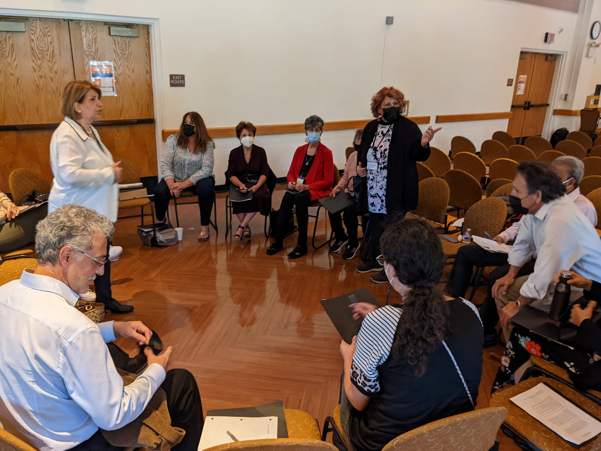
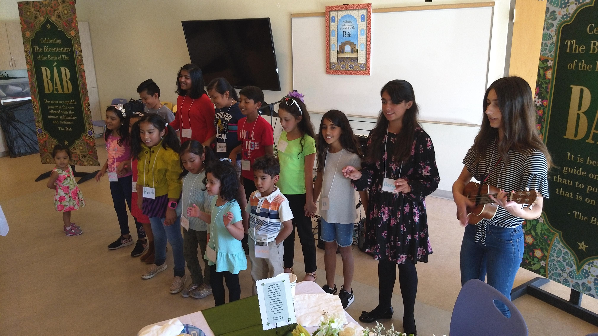

Local Activities
Spiritual Study Circles
These participatory study circles are designed to help individuals develop their spiritual insights and build capacity for service. Together, we explore the Bahá'í writings and apply their wisdom to current social challenges.

Community members discussing community building activities.
Children's Spiritual Education
Our classes focus on the moral and spiritual development of children. We use stories, art, and games to instill values like truthfulness, kindness, and justice, helping children recognize their inherent nobility.

Children singing at the Bicentenary of the Báb, Lake Forest Sports Park.
Devotionals & Firesides
We host local devotional gatherings and firesides every month. These informal meetings provide an atmosphere of reverence and prayer, as well as opportunities for open conversation about the teachings of the Faith.
Recent Firesides
The Purity of the Heart – A Bahá'í Perspective
January 24, 2026 @ 4:00 PM
An introductory session exploring the spiritual significance of cultivating a pure heart.
The Purity of the Heart (Part II) – A Bahá'í Perspective
April 25, 2026 @ 4:00 PM
A follow-up discussion that deepened our exploration of this vital spiritual topic.
The Circle of Unity
Located in the peaceful surroundings of Serrano Creek Park, the Circle of Unity is a special ring of trees dedicated as a physical space for prayer, meditation, and quiet reflection.
Open to the public, it serves as a natural sanctuary where community members of all faiths can gather to find tranquility in nature, foster an inner sense of peace, and reflect on the spiritual oneness of humankind.
Online Education
Christ's New Name
We have created a comprehensive online video series dedicated to exploring Biblical prophecy. For those from a Christian or Jewish background, or anyone interested in scripture, this channel offers deep insights into how the Bahá'í teachings fulfill the promises of the return of Christ and the realization of the New Jerusalem.
Join us online to study these profound topics at your own pace.